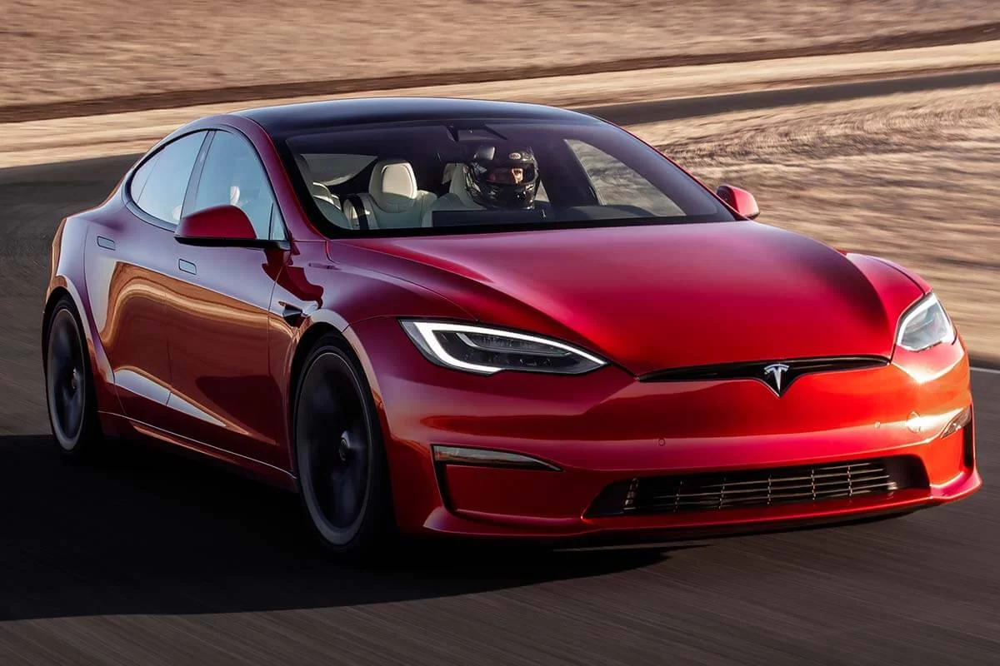
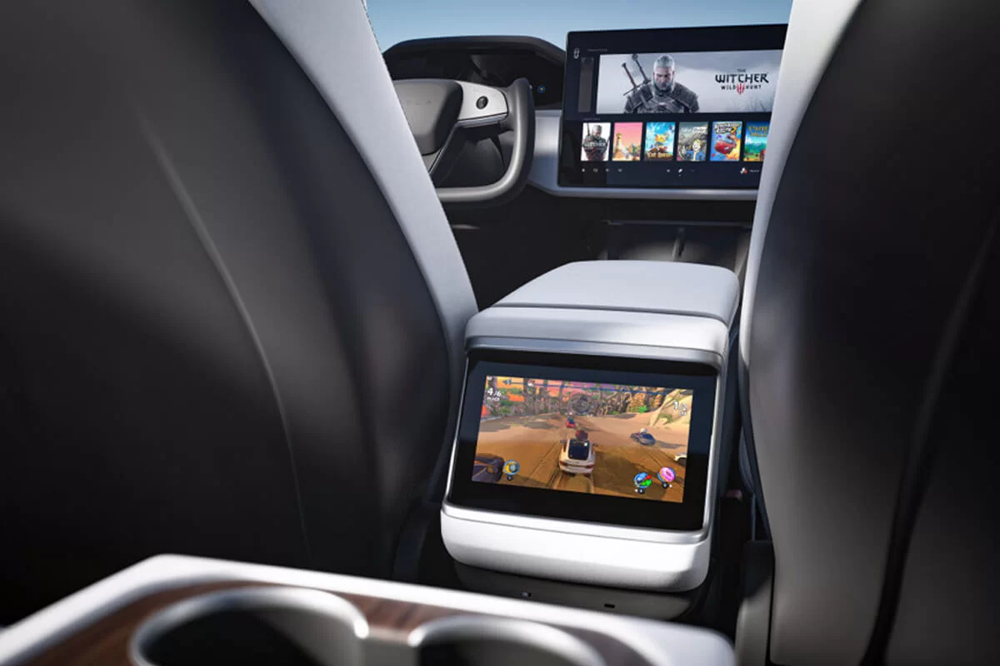

Tesla Model S
Самый быстрый массовый электрокар на планете с запасом хода до 652 км. Выпускается в версиях Long Range и Plaid
Именно Model S принесла марке Tesla первую мировую славу. Дебютировав в 2013 году, автомобиль продержался с легкими изменениями до 2021 года. В январе компания объявила о глобальном обновлении модели. Оно затронуло как дизайн интерьера и экстерьера, так и техническую часть Tesla Model S.
Кардинальных изменений во внешности не произошло — с переднего бампера убрали противотуманные фары, вместо хромированных элементов декора используются темные. Колесные диски получили другой дизайн. Важно, что автомобиль сохранил свои узнаваемые черты, но при этом стал немного шире и длиннее.
Наибольшим изменениям подвергся интерьер Tesla Model S. Самой крутой «фишкой» обновленной модели стало рулевое колесо в виде штурвала гоночного болида. Таким образом компания намекает на незаурядные динамические возможности новой Model S. На рулевой колонке отсутствуют рычажки указателей поворотов и переключения режимов движения — вместо них используются сенсорные кнопки на спицах штурвала. Для покупателей будет возможность заказать привычное рулевое колесо.
Новая Model S сохранила небольшой экран панели приборов за рулевым колесом. Центральный «планшет» из вертикального стал горизонтальным. Экран диагональю 17 дюймов получил повышенные яркость и контрастность. Разрешение его составляет 2200х1300. Так же задние пассажиры получили свой цветной дисплей, расположенный между передними креслами. Его диагональ — 8 дюймов, к нему можно подключать игровые консоли. Из заметных нововведений — замаскированные на манер Model 3 дефлекторы воздуховодов.
В списке оснащения наконец-то появились вентиляция передних кресел и трехзонный климат-контроль, а также консоль для беспроводной зарядки телефонов и два порта USB Type-C.
Серьезно изменилась техническая часть. Новая Tesla Model S стала быстрее, мощнее и дальнобойнее. Базовая версия Model S Long Range получила два электромотора и полный привод. Пиковая мощность выросла до 679 л.с., а время разгона до 60 миль в час (97 км/ч) сократилось разом с 3,7 до 3,1 с. Максимальная скорость — 249 км/ч). Батарея осталась прежней, но дальность хода немного увеличилась: с 647 до 663 км по американскому циклу EPA. По сути базовая версия приблизиалсь по своим показателям к Performance нынешней генерации.
А место самой мощной модификации Performance теперь займет Model S Plaid. В ее конструкции используется сразу три электромотора, два из которых индивидуально вращают задние колеса. Это решение позволяет гибко подавать тягу индивидуально на каждое колесо. Пиковая суммарная мощность трех моторов — 1034 л.с. «Заряженный» лифтбек разгоняется до 100 км/ч за 1,99 секунды, а максимальная скорость достигает 322 км/ч. Дальность хода при этом составляет 628 км.
Еще одно важное преимущество Model S — высокий уровень безопасности. Кузов автомобиля изготовлен из жесткого и легкого алюминия. Для повышения прочности каркаса также использована сталь повышенной прочности. Батарея электромобиля является силовым элементом конструкции и надежно защищена от повреждений. Tesla S оборудована 8-ю подушками безопасности для водителя и переднего пассажира: 2 для головы, 2 для таза, 2 для колен, 2 боковые и шторками безопасности. Серьезная работа над конструкцией привела к тому, что Tesla Model S стала одним из самых безопасных авто по методикам NTHSA и EuroNCAP, заработав высшие баллы во всех испытаниях.
ТЕХНИЧЕСКИЕ ХАРАКТЕРИСТИКИ TESLA MODEL S PLAID
- Батарея 100 кВт/ч
- Мощность 1034 л.с.
- Привод полный
- Запас хода 628
- Разгон до 100 км/ч 2,1 секунды
- Максимальная скорость 322 км/ч